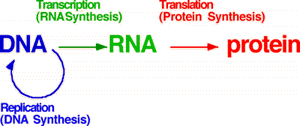

Eukaryotic Gene Expression Problem Set
Problem 13: Information transfer to the cytoplasm
Help to answer the questionWhich of the following molecules functions to transfer information from the nucleus to the cytoplasm?
Tutorial
Information flow|
The "central dogma" of information flow in molecular biology is illustrated in the figure. Direction of information flow is shown by the colored arrows. DNA encodes the information of the genome, which is copied during DNA replication. In eukaryotic cells, DNA replication occurs in the nucleus, where the chromosomes reside.
 |
| Genetic information in converted to RNA during the process of transcription. In eukaryotes, transcription occurs in the nucleus. Following RNA processing, RNAs exit the nucleus to the cytoplasm where they are utilized. mRNAs in particular carry the information for protein sequences. Thus mRNAs are used to convey genetic information from the nucleus to the cytoplasm. |
| Translation is the synthesis of proteins on ribosomes, where the information for amino acid sequence encoded in mRNA (and originally in DNA) is retrieved and converted to the sequence of amino acids in a protein. |

University of Arizona
Thursday, October 24, 1996
Contact the Development Team
http://www.biology.arizona.edu
All contents copyright © 1996. All rights reserved.